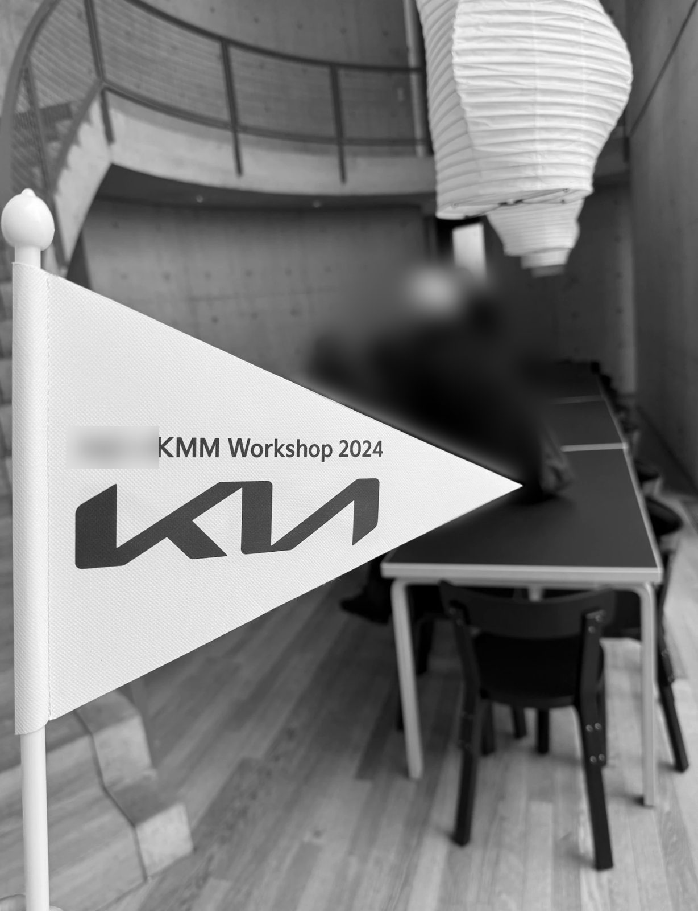

Kia design tour: six days, three countries

The pitch. Many agencies were bidding. I presented about half of our pitch. We offered a local manager based in Germany and an active tour, not only bus rides between museums.
The idea. Car design was moving back to heritage styles, and so was the group's next design direction. I wanted the young designers to learn from an experienced designer by spending time with him, not from a lecture. Through an acquaintance's boss I contacted a well-known retired car designer and convinced him by email. He joined the group for all six days.
Driving days. The participants were between their mid-20s and mid-30s, so they drove for three of the days: 5 rental cars, teams of 3, winding roads. I built four routes in Google Maps, drove them myself and kept one. Every car had a radio, and I arranged extra insurance with the rental company. Other stops were the Nürburgring, the Vitra Design Museum and car museums along the route.
When it rained. Rain slowed down the driving day, so we dropped the Nürburgring passenger ride and visited well-known spots on the way instead.
Result. The participant survey was positive, and Kia chose the same agency again. I was asked back for 2026 but said no because of exams.
Open question. A tour like this can't please everyone. Should it aim for the majority or for the average? I chose the average: participants who were nervous about driving were teamed with ones who loved driving. I'm still not sure what the right answer is. Looking back, I should also have planned the pace for the speaker, not only for the participants.